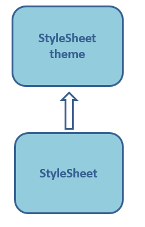

Home
Categories
Dictionary
Download
Project Details
Changes Log
What Links Here
How To
Syntax
FAQ
License
StyleSheet theme
1 Support
2 Overview
3 Specify a custom CSS theme file
4 Theme properties list
4.1 General properties
4.2 APIs links properties
4.3 External links and notes properties
4.4 Table
4.5 Message box
4.6 Syntax in pre
4.7 Other elements
5 Setting global properties
6 See also
2 Overview
3 Specify a custom CSS theme file
4 Theme properties list
4.1 General properties
4.2 APIs links properties
4.3 External links and notes properties
4.4 Table
4.5 Message box
4.6 Syntax in pre
4.7 Other elements
5 Setting global properties
6 See also
The "styleSheetTheme" property in the configuration file or the command-line allows to specify the StyleSheet theme for the HTML result.
Properties in the theme file are used as variables in the main file. For example in the theme CSS file we have:
If you want to create your own custom StyleSheet theme, you must export the default StyleSheet theme file by using the Tools and modify the variables specified in the theme for the properties you want to change.
You can also add other global properties in your custom CSS theme file.
For example:
Support
The theme feature is only supported for the following output formats:- "html" (the defautl value)
- "help": for generating a help content to provide a help system in any Swing or JavaFX application, if the content is optimized for JavaFX
Overview
The StyleSheet theme is a CSS file specifying CSS global properties which will be used by the main StyleSheet CSS file:
Properties in the theme file are used as variables in the main file. For example in the theme CSS file we have:
:root { --wiki-background: #f5faff; /* the background color for the table of content, the boxes, and the left menu */ --wiki-border: #E1E1E1; /* the border color for the table of content, and the boxes */ ... }and in the main CSS file:
@import "stylesheetTheme.css"; .toc { background: var(--wiki-background); border-style: solid; border-width: 1px; border-color: var(--wiki-border); padding: 7px 7px 7px 7px; display: table; line-height: 120%; }
Specify a custom CSS theme file
Main Article: GUI tools
If you want to create your own custom StyleSheet theme, you must export the default StyleSheet theme file by using the Tools and modify the variables specified in the theme for the properties you want to change.
You can also add other global properties in your custom CSS theme file.
Theme properties list
The default content of the theme file is stylesheetTheme.css.General properties
| CSS Property | Applies To | Comment |
|---|---|---|
--wiki-background |
left menu table of content box |
background color |
--wiki-border |
table of content box |
border color |
APIs links properties
| CSS Property | Applies To | Comment |
|---|---|---|
--wiki-apilink-background |
programmming language API | background color for programming languages APIs |
--wiki-apilink-color |
programmming language API | text color for programming languages APIs |
--wiki-linktooltip-border |
apis links | background color for the API link |
--wiki-api-headertitle |
apidoc | text color for the apidoc header title |
External links and notes properties
| CSS Property | Applies To | Comment |
|---|---|---|
--wiki-link |
a | color for normal links |
--wiki-link-visited |
a | color for visited links |
--wiki-link-active |
a | color for active links |
--wiki-lighterlink-background |
a | background color for lighter links |
--wiki-lighterlink |
a | text color for lighter links |
--wiki-linktooltip-background |
notes tooltip | background color for notes tooltips |
--wiki-linktooltip-border |
notes tooltip | border color for notes tooltips |
--wiki-linktooltipbox-background |
notes tooltip | background color for notes tooltips boxes |
Table
| CSS Property | Applies To | Comment |
|---|---|---|
--wiki-table-border |
table element | border color for the table cells |
--wiki-tableheader-background |
table element | background for the table header |
--wiki-tablecaption-background |
table element | background for the table caption |
--wiki-tablecaption-border |
table element | border color for the table caption |
--wiki-tableheader-color |
table element | text color for the table header |
--wiki-tablecell-even-background |
table element | background color for even rows in tables |
--wiki-tablecell-odd-background |
table element | background color for odd rows in tables |
Message box
| CSS Property | Applies To | Comment |
|---|---|---|
--wiki-messagebox-default-color |
messageBox element | text color for a messageBox of the default type |
--wiki-messagebox-defaultbackground |
messageBox element | background color for a messageBox of the default type |
--wiki-messagebox-info-color |
messageBox element | text color for a messageBox of the info type |
--wiki-messagebox-info-background |
messageBox element | background color for a messageBox of the info type |
--wiki-messagebox-success-color |
messageBox element | text color for a messageBox of the success type |
--wiki-messagebox-success-background |
messageBox element | background color for a messageBox of the success type |
--wiki-messagebox-warning-color |
messageBox element | text color for a messageBox of the warning type |
--wiki-messagebox-warning-background |
messageBox element | background color for a messageBox of the warning type |
--wiki-messagebox-error-color |
messageBox element | text color for a messageBox of the error type |
--wiki-messagebox-error-background |
messageBox element | background color for a messageBox of the error type |
--wiki-messagebox-progress-color |
messageBox element | text color for a messageBox of the progress type |
--wiki-messagebox-progress-background |
messageBox element | background color for a messageBox of the progress type |
--wiki-messagebox-caption-background |
messageBox element | background color for a messageBox caption |
Syntax in pre
| CSS Property | Applies To | Comment |
|---|---|---|
--wiki-syntax-keyWord1 |
syntax highlighting | KEYWORD1 color for syntax highlighting |
--wiki-syntax-keyWord2 |
syntax highlighting | KEYWORD2 color for syntax highlighting |
--wiki-syntax-comment |
syntax highlighting | COMMENT color for syntax highlighting |
--wiki-syntax-literal |
syntax highlighting | LITERAL color for syntax highlighting |
--wiki-syntax-label |
syntax highlighting | LABEL color for syntax highlighting |
-wiki-syntax-default |
syntax highlighting | Default color for syntax highlighting |
-wiki-syntax-default |
syntax highlighting | Default color for syntax highlighting |
public void toto(int i) { int a = 2; // this is a Comment String s = "this is a Literal"; System.out.println(i); }In this Java syntax:
-
public,void, andintuse the KEYWORD1 color - "this is a comment" use the COMMENT color
- The other elements use the Default color
keyword=first valueIn this Properties syntax:
-
keyworduse the KEYWORD1 color - The other elements use the Default color
SELECT ?eltLabel ?class WHERE { ?elt rdf:type ?class . ?elt rdf:type my:Element . ?elt my:Label ?eltLabel . }In this SPARQL syntax:
-
SELECT,SELECTandWHEREuse the KEYWORD1 color - The
?elt, etc... elements use the LABEL color - The other elements use the Default color
Other elements
| CSS Property | Applies To | Comment |
|---|---|---|
--wiki-pre-background |
pre code |
background for the pre, source, or code |
--wiki-pre-border |
pre code |
border color for the pre, source, or code |
--wiki-img-border |
img element | border color for the image |
--wiki-infobox-background |
infobox | background for the infobox |
--wiki-infobox-border |
infobox | border color for the infobox |
--wiki-blockquote-border |
blockquote | border color for the blockquote |
--wiki-tree-ulborder-color |
tree | tree segments color |
--wiki-comment-background |
comment | background color for comments |
--wiki-highlight |
search | background color for highlighted text in full text search |
--wiki-todo-background |
todo | background color for TODOs of the default importance |
--wiki-todo-warning-background |
todo | background color for TODOs of the warning importance |
--wiki-todo-critical-background |
todo | background color for TODOs of the critical importance |
--wiki-todo-border |
todo | border color for TODOs |
--wiki-lightbox-close |
img element | color of the close button in images lightbox |
--wiki-lightbox-close-focus |
img element | color of the focused close button in images lightbox |
--wiki-lightbox-caption |
img element | color of caption text in images lightbox |
Setting global properties
Appart from the specified properties for the wiki, global html properties can be set in the theme CSS file. For example, you can specify that all text must be white and the background must be black with::root { --wiki-background: #f5faff; /* the background color for the table of content, the boxes, and the left menu */ ... background-color: black; color: white; }
See also
- Custom StyleSheet: The "css" property in the configuration file or the command-line allows to specify a custom StyleSheet for the HTML result
- StyleSheet theme tutorial: This article is a tutorial which explains how to a custom StyleSheet theme for the wiki
- Configuration file: It is possible to define an optional property / value configuration file when starting the application (using the graphical UI or the command line)
- Command-line starting: This article is about how to execute the application by the command-line without showing the UI
×

Categories: Configuration